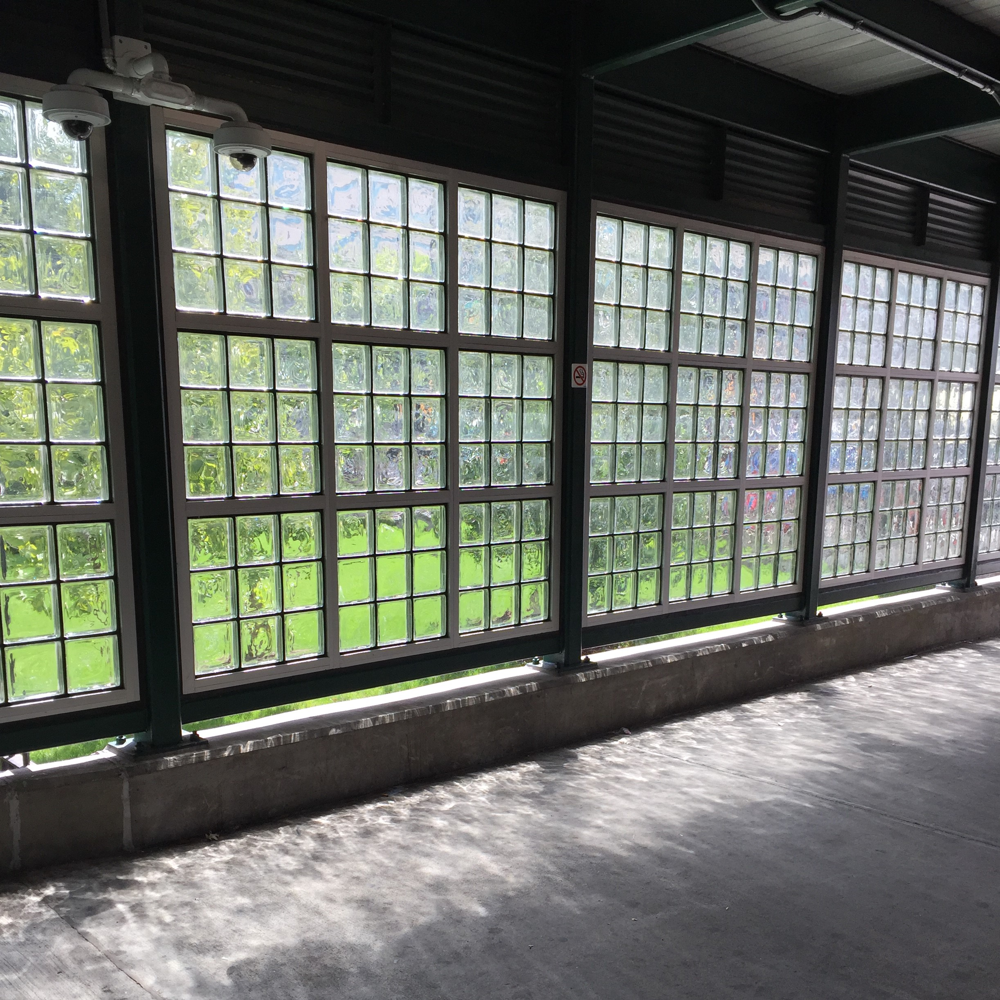
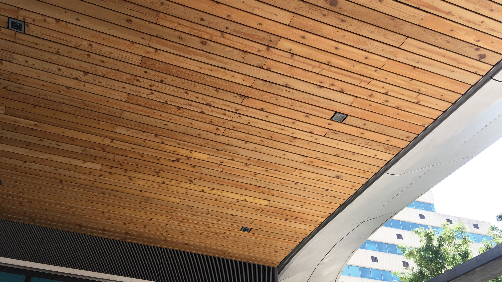

Metro North Railroad Station.
 One main improvement to the Metro North Station and Fordham Plaza, was the adding of lighting to what used to be a very dim and dark railroad station.
Here is a picture of windows that allow natural light to shine through, as well as greenery from Fordham University next door. Great effort was made to make the Plaza more memorable for all.
Changes made to the Metro North.
All Along the platform of the Metro North Station you will see some artwork and architecture. Many of the designs were made to allows natural light to flow through in order to brighten the place.
More visible cameras are seens throughtout the Plaza. These changes should make the Metro-North much safer. Unlike in the old days when the place was more dark and closed in.
The Architecture and Art
Renovation of the surrounding areas of the Metro North Station are clearly seen. More greenery was added. Many shrubs and trees were planted. Wood is use throughout the Plaza to make it more eco-friendly looking. Wood ceilings on the outdoor structures, and several circular wood benches. The area looks more like a park, instead of a busy shopping center.
My New York
The Newly Renovated Metro North Station, had two awesome sculptures on the right side the Metro North Station, for a short period of time. One looked like a small child the other looked like a large owl, made of metal. I had wondered what happened to them, not knowing that they were there temporary. Bringing art work to the Fordham area is such a great idea. The Fordham Plaza area doesn't really have a permanent sculpture like other boroughs. Someday I will like to see more artwork at the Fordham Plaza area. Perhaps a permanent piece of art at the Metro North Station would be nice addition to the Plaza. In the meantime this was such a beautiful and welcoming piece for the Bronx.
If you would like to see one of the sculptures and learn more about it's designer, you can click on the link below, to go to "the bronxchronicle.com" article: Tomorrow by Akihiro Ito.
"Tomorrow" by Akihiro Ito.